|
 |
教你炒股票64：去机场路上给各位补课
(2007-07-02 21:37:44)
现在的课已经越来越精细，特别用的是最小的1分钟，一般的理论，在这么精细、偶然性那么大的图上都要乱套了，但却恰好能显示本ID理论的有力。别说1分钟图，分笔图也没问题，这就是本ID理论所构筑几何结构的力量。世界都是几何的，别说那几张无聊的走势图了。
看下图，为什么下午的分段是这样？大概很少人现在就能全部搞清楚，所以，为了让各位能睡一个塌实觉，也为了免得等一下飞机万一不听话，到时候只留下各位在这里争论不休没人再给解答，所以本ID在去机场的路上用本本给各位补上一课。
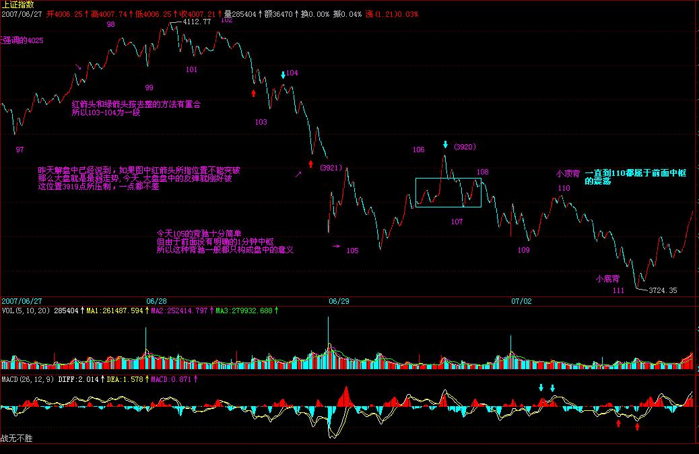 106到107这一段箭头所指的那一笔，用的是取整的前提(底分型），所以，只要你仔细去分析，就知道那一定是一笔。这个问题，本ID瞧了一下，见一位叫快乐vs菜虫的网友已说到。当然，你可能要问为什么一定要取整？这没有什么必然性，只是预设的前提，你可以采取严格到小数后两位的精确度，但其实不同软件，对1分钟这么精细的图，都会有数值上的细微差别，所以，所谓的精确，往往不一定就是，而在这么快速变动的市场中，数值有点细微差别，其实没什么不同，例如，还可以用这样的区别方式，就是两者相差0.5点内的看成是一样的。所有预设精度，唯一必须遵守的，就是精度一旦预设，就一定要一路保持。
注意，没有什么精度是十全十美的，例如用相差0.5内看成是相同的，那么如果是0.51呢？这和0.49也没有多大区别。所以这些细节，其实问题都不大，关键是要统一，不要变来变去。由于现在只是示范，为了方便各位学习，就一直继续采用取整的精度，各位可以根据自己的情况来调整。
至于108-109，带箭头那笔为什么不被算成一段？也就是108-109为什么不是三段？这很简单，因为段必须是至少三笔构成，缺口如果包含在一笔中的，像今天早上低开的缺口，没有破坏昨天那笔，是顺着昨天那笔下来的，所以这种缺口和一般的走势没什么区别，缺口还是包含在昨天的一笔里。但有些突然性的逆着走势来的缺口，就像530那个，就必然要当成一段，而不能光当成一笔或一笔里的了。有人可能说，缺口没有三笔？那你可以这样去看，就像0=0+0+0，缺口可以看成是三个缺口的迭加，这样就有三笔以上了。还有，有位叫袖手旁观的网友理解得也不错，线段必须要被破坏才算结束，但必须要强调的是，线段必须要被线段破坏才算是真破坏，单纯的一笔是不能破坏线段的，这就避免了一些特偶然因数对走势的干扰。
至于110-111。红箭头那两个为什么不是最终精确定位的背驰点？这都是些以前就应该解决的简单问题。像第一个红箭头位置，第一次略微跌破109那位置，这时候把已经出现的面积和前面108-109的对应面积之和比，已经十分接近，也就是说110-111，刚起跌，这力度已经和前面的108-109差不多，这恰好说明这一段的力度是很强的，不但不可能是对108-109背驰，而且站在中枢震荡的角度，这种力度，一定是小级别转大级别以时间换空间或与更大力度的对比产生的背驰才能化解的。后面这种情况，在这个实际的图形中，就是与前面104-105的下跌力度比。110-111这段，相比较的，是104-105这段，中间的中枢震荡的中枢，是105到110这个。因此，这里根本不存在与108-109对比的问题。站在105-107这个中枢的角度，110虽然不构成第三类卖点，但也极为接近，这种对中枢的离开，力度一般都很大，所以就算你搞不清楚和哪段比，也至少要等这段的结构被破坏，才有介入的可能，而后面，上下上的两次反抽，根本就没有破坏其结构，因此后面的破位下跌就是天经地义的。
' 机场到了，先保存起来。挺好玩的，帖子分两段写，中间过一安检。继续。
至于第二红箭头那个，就更不可能是了。绿箭头那次反抽，等于对前面破位前那上下上的微型类中枢（注意，站在严格意义上，线段以下是没有中枢的，所以说是类中枢）的一个类第三类卖点，后面有两种变化，就是转大级别类中枢或类中枢移动直到形成新类中枢为止。而下面的黄白线，是一个典型的下上下结构中的第二下刚破上的低点，这是力度最大的一下，怎么可能有背驰出现？MACD第一个红箭头就指这大的下上下破的一下，这时候除非出现线段结构的突发性破坏，否则不可能有什么背驰出现。而后的回拉，其实刚好构成一个奔走型的上下上结构（也就是第二上刚和第一上的低点稍微重合），这其实也就构成另一个微型类中枢。这和第一个红箭头指的那个一起，刚好构成两个类中枢的下跌走势。然后，后面的背驰判断就很简单了，和一般的趋势中背驰的判断一样。针对第二那奔走型的微型中枢的前后两段，MACD两个红箭头对应的绿柱子的比较，一目了然。（千万别再问这时候为什么不看黄白线之类的问题，这类问题回答过N次了。）
请各位好好把各类情况消化好，特别一些最基本的知识，一定要掌握，62、63课，要完全吃透，而且能当下应用。当然，这需要不断练习，不断研究不同的图形。
本ID就不再说什么了，准备登机。回到北京，也快第二天了。
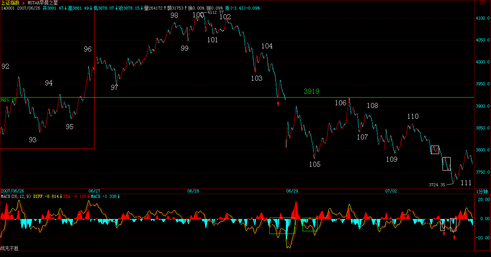
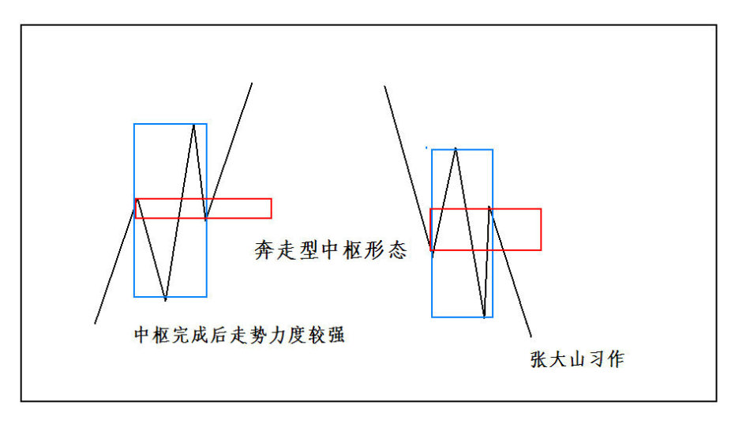
今日解盘：3919颈线折磨你
(2007-07-03 15:30:02)
一回来，N多的腐败活动，今晚又要看演出，所以只能粗略说说。今天的大盘，就是在这N天反复强调的3919颈线下进行的蓄势，现在，图形上头肩底的雏形已经基本按剧本构造完毕，但如果颈线突破不了，那还是白搞。现在，人心涣散，谋事能成的概率，当然没有前面的多了。现在，剧本中最好的情节，就是走三角形，这次上去是D段。但这次的把握性，比上次B段那次要差，剧本只能按每天一步步演，下面最关键的就是这颈线的突破与回抽确认，但现在人气涣散，最主要是现在有些人，不断放暗枪，特别那些等额度的，肯定不想上，希望走平台型，因此不断捣乱。而走三角形的，又不一定很团结，只能见一步走一步，但本ID会尽力的，能走到哪里算哪里。
--------------------
有些市是必须逆着而为的
(2007-07-04 15:45:01)
散户多是墙头草，但如果所有的中国人都成了墙头草，那么，中国金融市场等着被人宰割的日子就不远了。昨天已经说了，那些正在等额度的，都希望走平台型，3000点下的时候，本ID也逆过一次市而为，当时博客都有部分记录，那次，这些汉奸与目前等额度的一批，希望从3000点下一直回到2000点下做一个大差价，但最终他们没有得逞。看看这里春节前后的帖子，就知道斗争的激烈。
这次，道理一样，那些等额度的，希望他们新增加的额度能够买到他们所谓符合投资价值的股票，而国内配合他们的，其他跟着他们的，都在暗地里使坏，这在昨天的解盘里已经说过。这时候，必须有人站出来，就像春节前3000点以下，那罗美国老头忽悠时，必须有人站出来。那次，本ID站出来了，这次也一样，现在的战役，就是不能让汉奸与等额度的人得逞，3000点那次，汉奸和等额度的人大败，这次，条件更险恶，但有些事情是必须干的，就像上次在3000点下，本ID就说过，有些事只能北京人干，北京人就是牛B，就像昨天在人民大会堂唱响国际歌。
技术上，压力惊人，但有些事情，就是要逆市而为。今天早上，两次的冲击，完全没有任何人跟进，所有的散户都落荒而逃，汉奸和等额度的不断犯坏，看看今天中石化等指标股上，再看看今天代表指标股的白线一直在黄线之下就知道了。但这次，汉奸和等额度的还是落空了，指数是跌了，但今天的游击战术还是成功了。
现在，就是要放弃指数，对所有有中长线价值的股票进行战略性建仓，让汉奸们、等额度的人，就算真打出平台型，也买不到好股票。整体上市、大重组、中小盘成长股票，都是可以游击战的领域，就让汉奸们去砸指标股好了，指标股不是不出手，而是要等待时机，时机一到，游击战就要转化为大兵团作战，就像3000点那次本ID演示的联通与中行一样。
对于散户来说，你们那些都是糊口的钱，没必须在这么血腥的斗争中坚持，就像八年抗战，在上海，不一样有很多面首活得很好？这样，抗战胜利不一样能分点好？这世界上，除了当汉奸，还可以当顺民，管他是日本人还是美国人。但本ID不可以，真正的北京人都不可以，本ID就是看不了汉奸和等额度的鬼子得逞，本ID的钱都不等着花，钱是留着买子弹，打鬼子和汉奸的。
现在的环境有什么可怕的，95年那么凶横的环境下，一样能掀起一轮轰轰烈烈的重组行情，而带头的，还记得是哪里的股票吗？昨天，在人民大会堂可以唱响国际歌，在最凶险的走势中，一样可以唱响游击队之歌。（以下精辟分析）
技术没什么可说的，颈线不能放量突破，图形自然受到破坏，大盘最坏的情况，就是进入缩量阴跌，散户的对策，本ID已经多次说过了，如果你没有技术、没有资金实力，那就半仓甚至空仓去当顺民，等待抗战胜利的机会然后再出来。
而对于有一定实力的资金，就选好目标，现在的股票也不过就1000来只，难道中国还没有1000多的游击队，在每个适合的股票上进行游击战？本ID已经选好目标了，你们呢？
好，不说了，没有资金实力的，就按技术来，唯一需要再次提醒的，就是要放大操作的级别，特别技术好不太好的。
但，只要给本ID一个机会，反攻是必然的，在拉锯中消耗汉奸和鬼子，这就策略。
先下，后面还有一大堆事情等着，不能多说了，再见。
告全国散户、大股东、庄家、基金及管理层书
(2007-07-04 23:34:45)
中国的资本市场，必将成为世界性的市场，因此，必然将吸引世界性的资金参与其中，但所有参与中国资本市场的资金，都必须按中国人制定的规则办事，任何企图通过收买、使诈、玩坏来达到不可告人目的的，都应得到应有惩罚。
管理层最重要的任务是什么？就是保证金融市场的绝对安全，这是和国防同等重要的事情。而中国金融市场绝对安全的最基本标志是什么？就是中国的金融市场是掌握在中国人手里的，是任何外国势力都不能攻陷的，这是不允许有租界、不允许0.00001%的殖民色彩、不允许金融市场的任何一个山头去飘扬任何非中国的旗帜，无论那是太阳还是星条。
但众所周知的，2005年中的1000点飘扬着各色的旗帜，汉奸及其主子晃悠着各色的旗帜永远历史地在2005年的上海指数1000点处显摆，2007年春节前的3000点下，他们出手了，企图把中国资本市场的轮盘永远控制在自己手里，不过，那次，一场血与火的战争，他们失败了，1997年后，汉奸及其主子的嚣张气焰又一次被打击，但他们从来都不会死心。这次，分配给他们的额度一下大幅度增加，但任何对这个市场有一点了解的人都知道，其实，这连冰山一角都算不上，躲藏其后的资金，比这多得多。但，额度的增加，给了他们一个新的借口，他们又有了新的目标。
虽然中国人好客，1000点可以先让客人吃，甚至这次也可以弄个2000点再让客人先吃，好的都先让客人吃，但是，某些客人绝对不光光只想当客人，他们不光光只想吃几个底部，卖几个顶部，他们窥视的是整个中国的资本市场，他们现在的所有行为，不过是在预演，不过是要去培养一种习惯、一种情绪，一种潜移默化、不断积聚的习惯，最终，当他们发动致命一击时，这些习惯、情绪将起着关键作用，那时候才警觉，就太晚了。
必须如3000点下那次一样，打乱其节奏、打乱其计划，不能让其得逞，否则，一旦让他们得逞一次，以后就永远落入其圈套、节奏之中。一个最简单的问题，请问，难道他们每一次提高额度，市场都要回调60%来等他们买入，这才是中国人的好客之道？要表现好客，2005年的1000点已经够了，以后还有，那不是傻蛋就是别有用心。
任何的资本市场，都有大鳄，如果杀光了本国的大鳄，那不过是让外国大鳄横行。中国的金融市场，也需要自己强大的海陆空三军，在现代社会里，这甚至是更为重要的国防力量。只有脑子都是废水的人才会认为，只有上涨才有操控，难道下跌就不可以操控？但现实却是，只有因拉抬坐牢的，却没有因打压坐牢的，还是问一个最简单的问题，导致2001年后，在中国经济飞速发展的背景下打压4年，近60%去请外国人客的人，是否要背负法律责任？是否需要去彻查某些外国资金违反中国法律的勾当？是否要对某些有罪恶勾当的资金全部没收、永远禁入？管理层的监管系统能不能环保一点，别光看着红，涨得多的，需不需要监控一下主要针对指标个股刻意打压的帐号？难道你们的分辨力连刻意打压与正常卖出都分不清楚？对那些大各大传播途径散播胡乱编造消息的是否要采取必要措施？难道在发生灾害时能允许人随意散播恐慌言论吗？现在的手段，难道还不足以对此进行有效措施吗？
对于全流通后的大股东，好好管好你们的企业，只要你的企业能在世界上为中国人扬眉吐气，那你的股价、财富自然也扬眉吐气，中国的资本市场会为所有有能力、有抱负的中国企业提供最强大的能量，这是你们最坚强的后盾，让你们去征服世界。一个没有征服世界雄心的中国企业，不配当中国资本市场的上市公司。
对于各路庄家，你们辛苦了，任何行业都有害群之马，庄家必须得到正名，不能因为少数的害群之马而败坏了整个行业。没有任何资本市场是不存在庄家的，但庄家的形式，也必须与时俱进，像以前那种老模式，路子将越来越窄。必须实现庄家新的模式，但无论模式如何，有一点是必须知道的，请管好自己的一亩三分地，别让鬼佬抄了后路。现在不过就1000来只股票，难道中国连1000来个合格的庄家都没有？任何一个中国庄家，最基本的标准就是，不能让鬼佬抄了后路，宁愿当山大王，也决不当汉奸头子吃鬼佬的屁。
对于基金，因为有些基金的汉奸背景，就不说他们了。所有不想汉奸化的基金，必须树立有中国特色的投资理念为己任，一个被鬼佬完全洗脑的基金，是没资格管理中国老百姓的钱的。
对于散户，一定只能拿出空闲的钱来参与资本市场，任何有压力的钱，都不能也不应该来这个战场中。对于个人来说，资本市场不过是生活的一部分，没必要为此而付出所有的生活。如果你市场中的钱不符合以上要求，那么请等待一个好的机会，把该留的钱留好，绝对不能因为股票而影响正常的生活。而对于那些无压力的钱，也不能去当炮灰了，风险太大的活动是绝对不能参加的。而且，大兵团作战，其实你们也帮不上什么忙，一定要等到买点，特别是大级别的买点出现后才介入，市场是合力的结果，等大兵团作战打出结果来，大合力合力出方向来，才好介入，否则刀光剑影、飞机导弹，弄伤了就不好了。像本ID这种人，就算打败了，也是好吃好住，一生无忧，但散户就不同了，所以一定记住下面几点：
散户三大纪律
一、只用空闲的钱参与市场
二、必须等大兵团作战有结果才介入，要等大级别的买点。即使是本ID输了，汉奸鬼佬赢了，他们最终也是要搞上去的，这种，复仇的种子才能保存，楚虽三户可亡秦，有种子就有希望。
三、坚决不抬汉奸鬼佬的高位轿子，要练好技术，从底位开始，逐步抽光他们的血。
盘子控在汉奸与鬼佬手里，是没有金融安全可言的，这需要中国的散户、大股东、庄家、基金及管理层共同的努力。为了打乱汉奸鬼佬的节奏，本ID可以牺牲掉，但希望能换来国的散户、大股东、庄家、基金及管理层共同的努力，一致对外。中国的资本市场，只能中国人说了算。
最后，临屏赋《满江红》以告国人。
满江红
缠中说禅
万古长空，今犹昔，一朝风月。
何处住？春花夏雨，秋鸿冬雪。
百代浮华皆作土，千江吸尽无堪说。
问世间，多少梦消磨、英雄血。
星旋轨，天补裂，山崩柱，河倾缺。
捣神宫鬼府，凤巢龙穴。
怒剑穿云惊浩宇，狂涛卷日横孤筏。
纵生死，劫火洗乾坤，齐欢悦。
凭空接坠石，依然开弓没有回头箭
(2007-07-05 15:43:43)
所有的战役都不是一天能完成的，现在，进行的是一项不可能完成的任务，谁都知道，技术上周线刚破位，所以的技术指标与大的环境都不可能让这样的任务完成，但本ID既然这样选择了，就义无返顾。今天，是指标股被全面打压的一天。上下午两次的介入，同样50点的反弹，都以失败告终，但开弓没有回头箭，抗战必须坚持而且继续坚持，每一次的阻击，都是一次拉锯与消耗。没有正面的阻击，游击战争是开展不起来的。看看今天中石化等放出的量就知道了，虽然这是凭空接坠石，但必须接。而且，这也是以后需要的一些基本筹码。
今天的能量消耗不大，只属于试盘阶段，现在重点在三大领域，就是整体上市、大重组、中小成长股，这是与指数无关的。技术上，必须依靠年线，那些没有回到年线的股票，都不足以支持。但，这样的战役，靠一方力量是不足以完成的，像今天的两次反抽，最后都是因为没有呼应而夭折。但，明知道失败也要干，对技术指标上的战术准备，这两次反弹也是必要的。
但战争有其规律，不能莽撞，技术上，所有的因数都有利于汉奸与等额度的，但所有技术都是合力的结果，本ID站出来，而且将继续义无返顾地干下去，就是要改变着合力，这合力是由每个人组成的，这是一场成功率只有1%的战争，每多一份努力，都是值得的。而改变合力，最终都反映在某级别的买点上，本ID就是要在逐步的分级抵抗中，把大级别的买点给构造出来，这就是今后一段时间的任务。
好了，最终需要的工作太多，不能多说了，先下，再见。
和散户网友说说现在的形势与任务
(2007-07-05 23:04:16)
首先，必须要明确，各位的状况和本ID有很多本质的不同。各位也知道，本ID6月后就忙于PE的事情，可以很明确地说，本ID一部分资金已经分流到PE上去，也就是说，就算本ID这次大败，依然有翻身重来的机会，而且一定可以翻身重来。正因为有这样的背景，所以各位第一不用为本ID担心，第二必须知道，本ID这样干并不是不顾后果的意气之举，而是进退有度的。
其次，本ID必须在这时候站出来，败了，大不了当股东，哪天本ID心情不好，找一个面首收购了自己当大股东算了，当然，这就成了走唐家兄弟的老路，没什么意思。或者，再折腾几年，等本ID厌倦了，就不玩了，出来玩文化也很好。而各位并没有本ID如此自如的进退之路，所以，一定要量力而行。
因为本ID知道的太多，所以必须要干上这一仗，当然，这里不光是本ID自己的，本ID在市场上干过这么多事情，联合点人干点事，还是没问题的。站在纯技术的角度，这样干，绝对是脑子进水，但人，有时候脑子就是要进点水，特别当这事必须干时就更应义无返顾。本ID当然知道自己理论中耐心等待买点的道理，但站在实际层面，本ID必须追究，这个买点不能如1000点那样被汉奸了。站在纯技术的角度，本ID现在的所有行为都是错误的，正如站在所谓纯人性的角度，用胸口顶枪口肯定是有病的，但人，有时候就是要病上一病。
但对于一般的散户，完全没必要参与这种活动，各位应该利用市场机会去壮大自己，没必要干用胸口顶枪口的傻事。对于各位来说，根本不需要知道这市场的买卖点是如何合力构成的，你们只需要知道合力的结果，根据结果进行操作。
目前的技术形态，站在最恶劣的角度，如果是对整轮行情的一个中级调整，比较极端的幅度是2/3，也就是说，调整到2100点也是毫不奇怪的，所以，没必要有任何站岗的无聊思想。学了本ID的理论，唯一需要坚持的就是根据自己操作级别，买点买，卖点卖。等各位有这个能力后，才学本ID如此一病吧。
市场就是战场，一旦开战，在战场上，就是无情的，本ID只考虑如何去夺取战争的主动权，这里，一切手法都可以用上，本ID不希望在打仗时有什么顾虑，在战场上，分不清什么散户、机构。而且本ID这次战役的目标，也不是当什么解放军，只是要打乱某些人的节奏，让某些人的目的不能得逞。如果一定要硬加上一个解放军的任务，只能是两头不着边。解放军只能是一个顺带的任务，而不是战役的前提。所以这盆冷水，本ID是一定要泼的，本ID从来都实话实说，不想让人有任何不切实际的误解。
对于散户来说，市场中的真正的解放军，只能是你自己，你要掌握好技术，要对股市有充分的理解，要明白股票都是废纸，要知道，股票只是抽血的凭证。然后，放下一切幻想，如果有可能就学好本ID的理论，看图作业，这才是散户战胜市场之道，只有自己壮大了，才是对汉奸和鬼子最大的打击。而本ID有这个能力，当然需要更多的承担，这必须要分清楚。
本ID这次的任务，不是原来那16只股票可以完成的（这些股票，中长线的角度依然会关照的，对他们，都是保持0成本增加筹码的阶段），本ID现在正在开辟新的战场，介入一些对股市更有影响的品种，大致方向本ID已经说了，就是整体上市（包括中字头）的、大重组（包括老树发新枝那种）、中小成长。技术上，都是有年线可以依托的。本ID不可能去接什么基金、甚至汉奸的高位股票，那真有病了。但像中石化、联通等指标股，当然是需要慢慢控制的，否则，就没有话语权了。逐步，将慢慢掀起整体上市、大重组、中小成长的行情，把整个不利的局面扭转过来。
现在，要把人心扭转，不是一天半天的事情，必须有股票，逐步走出有号召力的行情来，才会得到市场的响应。当然，这市场不是本ID的，其他有实力的，如果都能选择好攻击对象，为市场的稳定和对汉奸的阻击给出自己的贡献，那么本ID的星火最终就可以燎原。而市场好了，解放军自然就来了，这才是根本之道。
光有热血，当义和团，是打不赢汉奸鬼子的。先下，再见。
散户三大纪律
一、只用空闲的钱参与市场
二、必须等大兵团作战有结果才介入，要等大级别的买点。即使是本ID输了，汉奸鬼佬赢了，他们最终也是要搞上去的，这种，复仇的种子才能保存，楚虽三户可亡秦，有种子就有希望。
三、坚决不抬汉奸鬼佬的高位轿子，要练好技术，从底位开始，逐步抽光他们的血。
以黄河名字展开的绝地反击
(2007-07-06
15:50:50)
今天一大早，本ID先把博客的个性图片换成了本ID写的《满江红》，再把《黄河大合唱》中选了四段，按交响乐的形式组成一四乐章的曲子放到背景音乐上，然后就开始了开盘前的一切准备。本ID知道，明天是7月7日，70年前的英灵在天上看着。
具体的盘中事情，各位就没必要知道了，各位只需要知道结果，而结果是什么，已经永远刻在中国证券历史的K线图上。当然，如果要学技术，要当猎鲸者的，请好好去研究一下，从昨天凭空接坠石的两波反抽，到今天早上一开始的急拉，到后面的下跌，是如何构筑一个良好的技术反攻图形的，例如可以看看5分钟图，是如何用钱把这个底背驰给构造出来的。本ID也不能违反本ID的理论，就像牛顿也不能让苹果尽往天上飞。
当然，本ID没可能干完所有的事情，只不过点了一把火，后来就星火燎原了。市场是大家的，不是本ID一个人的。至于具体的个股，就不方便说了，免得给人以把柄。不过，这里的人都这么冰雪聪明的，不说而说最终都是说了。
大的技术形态上，依然有利于某些人，所以，一切并不会因为一根阳包阴就天下太平，这就当是平型关一战吧，但已足以向某些人表明最基本的态度了，特别在这样一个特殊的日子里。
对于散户来说，一定要坚持按自己的级别买点买、卖点卖，这样才是取胜之道。特别在这种震荡市中，一定要把握好节奏。
本ID也累了，不想多说什么了，周末腐败去吧，周日继续音乐会。
最后，各位如果还有兴趣，请再读读这首词。
满江红
缠中说禅
万古长空，今犹昔，一朝风月。
何处住？春花夏雨，秋鸿冬雪。
百代浮华皆作土，千江吸尽无堪说。
问世间，多少梦消磨、英雄血。
星旋轨，天补裂，山崩柱，河倾缺。
捣神宫鬼府，凤巢龙穴。
怒剑穿云惊浩宇，狂涛卷日横孤筏。
纵生死，劫火洗乾坤，齐欢悦
-------------------
以黄河名字展开的绝地反击
(2007-07-06 15:50:50)
具体的盘中事情，各位就没必要知道了，各位只需要知道结果，而结果是什么，已经永远刻在中国证券历史的K线图上。当然，如果要学技术，要当猎鲸者的，请好好去研究一下，从昨天凭空接坠石的两波反抽，到今天早上一开始的急拉，到后面的下跌，是如何构筑一个良好的技术反攻图形的，例如可以看看5分钟图，是如何用钱把这个底背驰给构造出来的。本ID也不能违反本ID的理论，就像牛顿也不能让苹果尽往天上飞。
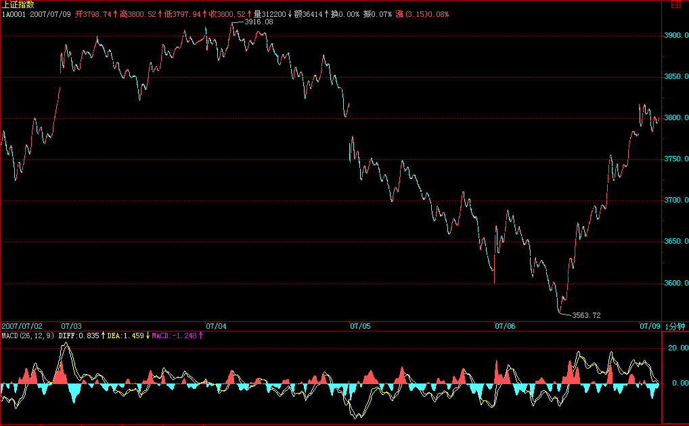
大的技术形态上，依然有利于某些人，所以，一切并不会因为一根阳包阴就天下太平，这就当是平型关一战吧，但已足以向某些人表明最基本的态度了，特别在这样一个特殊的日子里。
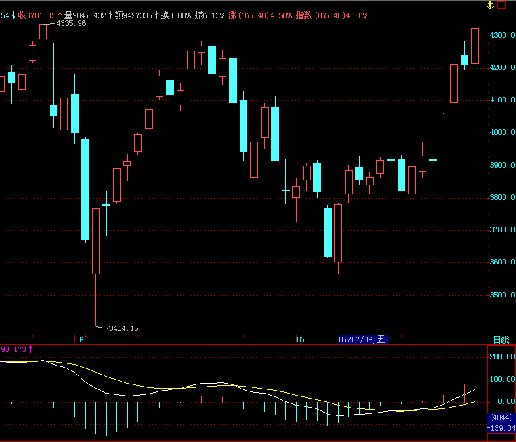 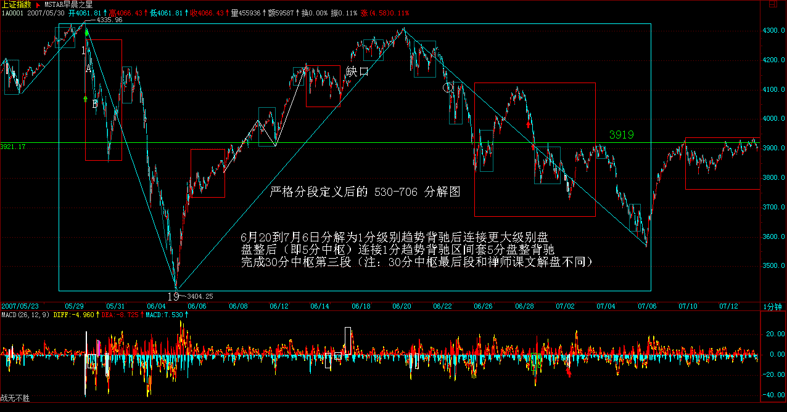 每日解盘(2007-07-08 22:16:44)
大盘长中短走势略说
(2007-07-08 22:16:44)
市场走势是合力的结果，市场不是本ID一个人的，本ID这一方的力量也不可能就是合力本身。目前市场走势，存在三种选择，而每一种选择对应着不同的多方能量要求，依次如下：
一、三角形调整
这种走势，要求的多方能量最大，具体走势分析，从530开始，大盘完成了三角形的前三段，目前正走三角形的第四段向上。这种走势要成立，前提就是要重新有效突破3919点的颈线，否则，如果没有足够能量达到这一点，大盘的三角形形态最终不可能成立。
二、平台型调整
不能重新站稳3919点，然后再逐步积聚空方能量，再次考验3400点低位，最强的平台型可以在3400点上完成，而一般地，将跌破3400点形成空头陷阱，极限位置可以达到2800点附近。
三、大平台型调整
这种情况下，大盘的调整时间将大幅度增加，也就是说第二种的平台形成后，形成一个大的反弹段后重新进入跌势，整个调整就是针对1000点上来的两年行情的大调整，极限位置，可以达到2100点附近。
前两种调整，时间都不会太长，最快的情况下，7月份就可以完成调整。而后一种情况，调整至少延续半年。注意，市场的任何走势都是当下形成的，并没有任何上帝规定现在就要选择哪一种调整方式，市场最终走势是合力的结果，所以，本ID上周的努力，并不是毫无用处的，所谓绝地反击，就是要在最合适的时机，四两拨千斤，用分力去改变合力，让合力按更好的选择去选择。
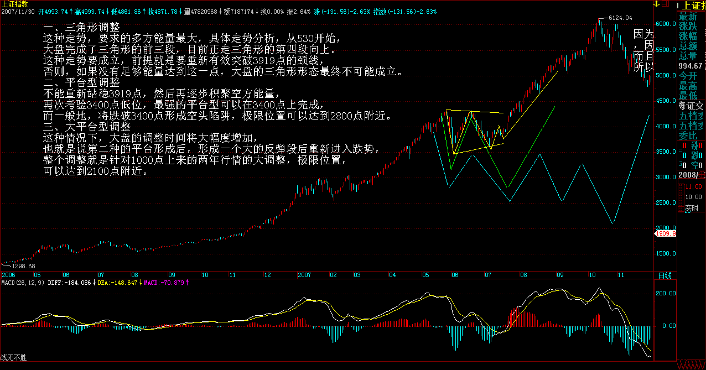
当然，所有的分力，无论多强大，最终都是分力，任何分力，把自己当合力了，就是脑子水太多的表现。世界上没有什么救世主、大救星，因为世界上没有任何分力就是合力本身，那种把自己当救世主、大救星，或者企求救世主、大救星的，都是脑子注水了。
对于一般散户来说，只需要根据本ID的理论来，根据合力本身的轨迹来。有人可能疑问，如果人人都根据合力来，等市场选择方向，那么市场还会波动吗？这是典型的脑子进水想法。市场有各种不同的利益，不同的利益构成不同的分力，任何时候都不缺乏不同的分力，除非这世界上没有了利益的分歧。但没有利益分歧的世界，至少不是目前的世界。
不用讳言，打击汉奸，不让鬼子霸占中国的金融市场，这也是一种利益，这也是一种利益驱动，所以就有了本ID上周的分力，就这么简单。这种利益是和鬼子、汉奸的根本对立的，所以要打仗，而打仗，没有任何上帝保证谁谁谁一定赢，所以本ID已经很明确地说，这次比春节前后本ID现场直播那次困难大多了，但本ID即使只有1%的把握也要干，这和任何技术无关，只是利益驱动，只是不希望鬼子汉奸横行的利益驱动。
但，对于散户来说，就像战场上打仗，散户就是一般的老百姓，哪里有让老百姓直接上战场打阵地战的？散户就算打，也只能打游击战，阵地战不仅打不起也输不起。散户和本ID这种人是有本质区别的，本ID阵地战打败了还可以打游击战，等大机会一到，随时又可以招兵买马、找到大量新的资金来大打战略大反攻，不是本ID看不起散户，而且很客观现实地根据不同的存在状态给出的客观建议。
所以，对于散户来说，究竟最终选择哪种调整方式根本不重要，最重要的就是要用本ID的理论，根据自己的操作级别，买点买、卖点卖，大打游击战，这才是散户该干的事情。
当然，如果你是散户，又没有打游击战的胆识，那么你就当顺民，就把仓位空掉，完全不参与这市场的操作，等市场调整完再说。
还有一种，就是干脆全仓不动，反正无论哪种调整，最终还是要结束的，最终还是要重新开始行情，中国股市大牛市的基础一点都没改变，20年3万点这过于保守的结论依然成立、甚至要大大向4万、5万点修正，只要拿着有着大潜质的股票，这些小波动根本不算什么。例如，本ID告诉各位的年线附近，中字头、大重组、整体上市、中小成长等股票，任何大盘的调整，只是提供一个中长线建仓的机会。
例如，那只中字头的唐家兄弟的老股票，如此大力度的重组（以后就知道，现在没必要说），如此深厚的大股东背景，如此完美的图形，虽然本ID很讨厌唐家兄弟，很鄙视他们智力低下的游戏技巧，但最近还是对这股票上下其手？而这种股票，就算是15.19元买了，解套挣大钱，还不是迟早的事情？问题不是你什么价格买，而是你是否有技术把成本降下来，或者，即使你没那技术，那你是否有持股的耐心与决心。否则，整天贪嗔痴疑慢中当惊弓之鸟、追涨杀跌，上帝他姥姥的姥姥都救不了你。
注意，本ID这只是举例，本ID最近上下其手的又不仅仅是这股票，而且更重要的是，并不是本ID上下其手的股票才是好股票，别的，有大买点、大题材、大背景的股票，都必须中长线密切关注。但最重要的，还是你的技术与心态，如果是烂技术加烂心态，任何股票都成了烂股。
股票，是废纸，玩不好，就是股票吸你血而不是相反；但站在国家的金融战略的大背景下，股票又是维护国家金融安全的关键筹码，一场虚拟战争的光剑。这两者，来自对股票观察的两个不同视角，没有对错，关键你的实力与位置。只有认清楚自己的实力与位置，才可能采取相应合适的操作，没有任何操作是适合所有人的。
好了，太晚了，先下，明天见。
中国股市前途的大决战
(2007-07-09 15:35:37)
大决战的第一目标，今天已经达到，就是用比下跌更低级别、更猛烈的方式重新回来前面3900点下的中枢里。只要回到该中枢里，一切都可以下回分解了，多空都将有一个喘息的时间去思考下一步的走法。
由于现在是打仗时期，本ID的分段就不要放上来了，免得汉奸鬼子从中揣测本ID的意图。但根据本ID前面给的分型、笔、段的原则，其实并不难解决。昨天的大盘长中短走势略说 已经把大盘的长中短走势按纯理论分析得十分清楚了，各位根据实际走势，不难发现最终合力选择的结果。
本ID这分力，当然是要选择第一种走法，而且三角形这选择，本ID也不是现在才说的，这也是上周出手的主要技术上理由。当然，由于本ID现在是身在此山中，所以多说也没用。
从今天下午开始，汉奸鬼子就开始加大反击力度了，明天，这力度会更加大，不过这都是在本ID的预料中，大不了，就再玩玩中枢震荡。从纯图形看，汉奸鬼子肯定不希望现在的大头肩底最终能成立，这就是斗争的关键所在。
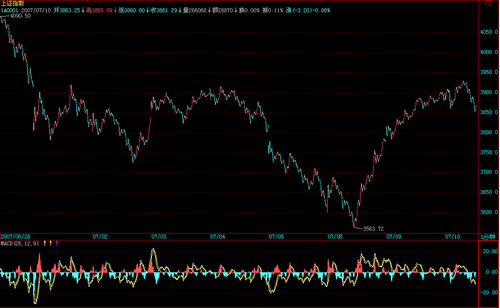
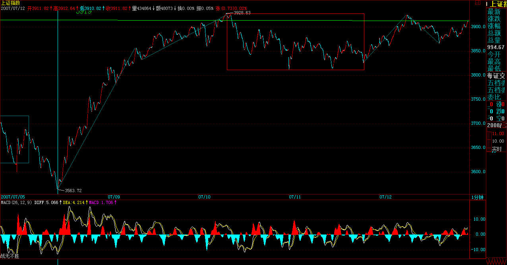
3919点继续折磨你
(2007-07-10 15:43:11)
今天的调整如期而至，这点在昨天已经说了。这种调整，无论多头空头，都是需要的，所以可以说是众望所归。今天由于金融股的超好业绩，引发大盘瞬间突破3919点，这并没有改变该位置的强大压制作用。
现在本ID与汉奸鬼子的分歧在于，这个3919点颈线下的头肩底是否能形成。所以，真正的鏖战还在后面。当然，其实最后是什么图形并不重要，最终都要归结到3919点颈线的有效突破，如果这一点达不到，其他一切都没意义。
对于散户来说，本ID已经多次强调，你们只需要知道游击战怎么打，看着市场的最终合力划出的轨迹、根据自己设定的级别来操作，最后就算本ID打败了，你们也没必要陪本ID一起去失败，该卖就卖，该买就买，根据图形来，而不是根据其他任何原因来。
个股方面的选择，从纯技术的角度，一种就是已经下跌50%上下，在年线、至少是半年线附近，有明显新资金介入的有题材、有潜质的中低价股票，另一种就是超强势的股票，但这种股票，一旦大盘逆转，就有补跌的可能，因此对技术的要求特别高。现在对个股，一定要抱着中长线建仓的心态，当然，有些短线题材股，会继续表现的，但这里的风险比上半年要大多了。
注意，对于散户来说，建仓完全可以是动态的，也就是说，你可以反复操作一只股票，这样把成本减下去，反复强调，在市场上要生存，关键的就是成本，一般股票在构筑底部时，一般震荡都比较大，其实是很容易把握的。而且，万一大盘逆转，有些股票会顺势砸出空头陷阱，如果不会动态建仓，就会有短线被套的痛苦，所以，如果你技术还可以，就要让自己动态起来，这样才是真工夫。
当然，如果你没什么技术，那就分析好基本面，研究透了，然后就靠熬的工夫，逐步建仓后就熬着，把牢底坐穿了，自己就解放赚大钱了。每个人的操作方法，必须根据自己的实际情况来，千万不要硬来。
最后再强调一次，市场操作，最终都要归于自己，只有自己提高了，才是最终的。千万别依靠任何人，连本ID都不要依靠，你可以学习本ID的理论，因为那是几何的、是不患的，谁都必须遵守，但千万别有依靠本ID的想法，本ID可不是慈善家，在残酷的市场中，宣称自己是慈善家的，肯定只能是骗子。
市场就是火与血，没有温情与慈善，就别偷心不死了。至于那些被传销者骗的，那是自作自受，市场没有眼泪给这些人，自己反省去吧。
先下，再见。
3850点，残酷的多空无量鏖战
(2007-07-11 15:41:38)
由于本ID身在此山中，因此评论难免有本方色彩，为了尽量客观点，所以以后的评论都换一种说法，这样就不至于干扰散户的自我判断。
昨天说了，真正的鏖战还在后面，今天，是一个地量，却是多空间一场残酷的无量鏖战，其他大多数的市场参与者都采取一种观望的态度，有点像古代战场上，对敌双方的主将在那里大战300回合，周围N万的人在那里观战，一旦一方取对方首级，后面就可以掩杀过来，来次大胜了。
当然，股票市场还要复杂点，有时候对方可能是九头虫，砍一个又冒一个出来，所以需要极端的耐心，不要期望一次搞掂。今天的无量与震荡幅度极端收窄，只不过意味着更大规模的、在更广空间上的对攻战的开始。
这是一场中国资本市场的斯大林格勒保卫战，对其残酷性要有最充分的准备。
中短线来说，3919点不能有效突破站稳，那么多方的中短线战略就没有得到真正的胜利；中长线来说，目前在4159点的1/2线不被有效突破站稳，多方的中长线战略也只能是空想，所以，对于多方来说，胜利还很遥远，还需要加倍的努力。1%的可能，也要付出100%的努力。
个股没什么说的，也不方便说。有人整天说本ID这里爱出谜语，这是自然的。本ID当然要根据法律来办事，本ID说的股票，都只是梦话，因为本ID白天自己买了，日有所思、夜有所梦而已。有时候操作多了，白天也说梦话，所以各位千万就当梦话听，千万要自己看图操作，一定要根据图形，在大级别的买点去介入。
当然，本ID有时候也会显摆一下，例如本ID3元上下买的000416，同时也就说梦话了，后来涨到18元，本ID显摆一下，是理所当然的。再说一遍，本ID说梦话的，一定自己刚买的，一般涨了本ID就不再说梦话了，最多就显摆一下，就像000999，6元说的梦话，后面都是显摆。当然，有时候梦话了，并不一定都如000999、000416、000777之类都一开始就梦想照进现实，有时候，梦里的剧情也会改变一下，但梦想总是要照进现实的。
好了，废话就不说了，本ID今天心情还不错，晚饭才有事，就回答各位的问题到4点半，不过一定是可以回答的问题，本ID可没有回答间谍问题的癖好。
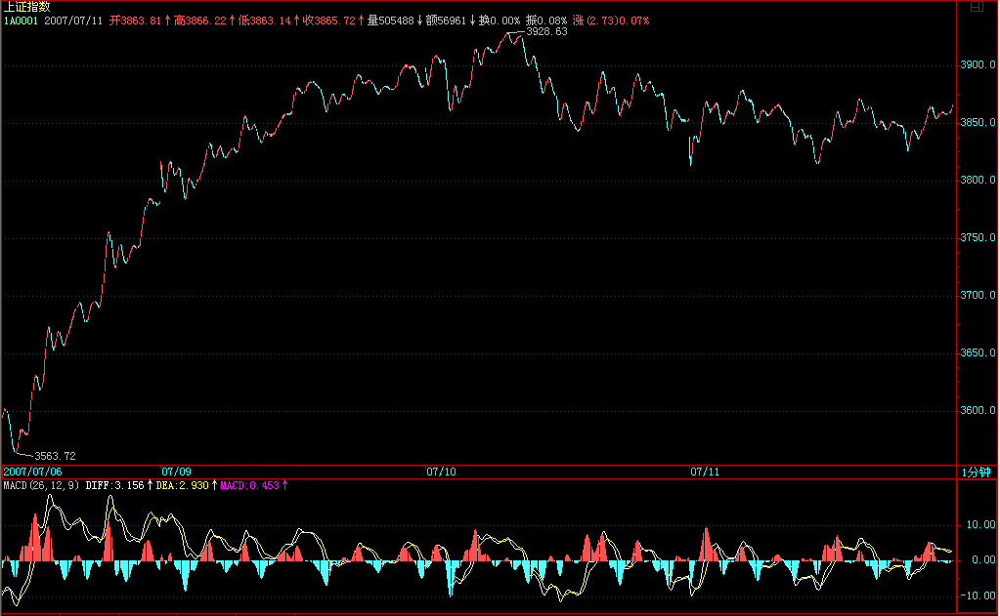
缠中说禅：
2007-07-11 15:47:57 [举报]
[匿名] 50年以前 =
缠中说禅：
2007-07-11 15:53:14 [举报]
楚狂人
缠中说禅：
2007-07-11 15:59:25 [举报]
[匿名] 在路上
缠中说禅：
2007-07-11 16:01:45 [举报]
[匿名] 窗外
缠中说禅：
2007-07-11 16:03:41 [举报]
[匿名] 手机用户
缠中说禅：
2007-07-11 16:08:23 [举报]
[匿名] 新浪网友
缠中说禅：
2007-07-11 16:10:26 [举报]
[匿名] 海东青
缠中说禅：
2007-07-11 16:13:53 [举报]
[匿名] 求教
缠中说禅：
2007-07-11 16:16:42 [举报]
[匿名] 水房姑娘
缠中说禅：
2007-07-11 16:26:35 [举报]
[匿名] 新浪网友 这里不明白。反弹的级别如何定？是不是也要看反弹以来的这一段走势包含什么级别的中枢？如果是，那反弹的级别等于/大于最后一个中枢的级别，不是在最后中枢下形成了新的中枢？望解惑.
缠中说禅：
2007-07-11 16:29:24 [举报]
以下网友留言只代表其个人观点，不代表新浪网的观点或立场
缠中说禅：
2007-07-11 16:27:30 =
缠中说禅：
2007-07-11 16:33:32 [举报]
[匿名] 弓口虫
缠中说禅：
2007-07-11 16:36:27 [举报]
[匿名] 多来米 2007-07-11 16:29:15
缠中说禅：
2007-07-11 16:38:05 [举报]
[匿名] 紫衣飘飘
每日解盘(2007-07-12 15:38:28)
坠石化光剑，兵临3919点颈线
(2007-07-12 15:38:28)
看完今天的走势，各位重新去看N天前的 凭空接坠石，依然开弓没有回头箭，大概都有别样感觉了。今天，坠石化为星球大战中的光剑，挥舞出雄兵亿万，直指3919点颈线，关于这光剑的道具，前面的帖子里也提过了。
当然，昨天说的更大规模、更广空间上的多空对攻战，今天不过是开始，后面的困难，还是想多点，准备充足点，毕竟现在，技术指标没被完全修复，人气还没被有效聚拢，后面的路还长着，路漫漫其修远兮吾将上下而求索。
个股方面，前面说了两类股票是必须关注的，一种就是中低价的已经受到年线支持的有题材、有潜力的股票，一种就是强势股票，这种股票的代表，就是昨晚为中国股票的投资价值正名中说的沪深300，原话是这样的“可以很明确地说，中期业绩出来后，沪深300的平均市盈率将远远低于50倍，中国股市目前的投资价值是被大大低估了。”
这里的老人都知道，本ID把中国的牛市分为三阶段，第一阶段是成分股行情，而这个第一阶段的行情还远为结束，站在20年以上大牛市的角度，现在不过是第一阶段成分股行情中的一个小修正，没什么大不了的。所以，在第一阶段行情中，任何一波有实在性意义的行情，都必须有成分股的加盟，否则都是白搞。中期业绩开始后，大家会发现如昨晚文章中说的，中国最好的300只股票的投资价值已经被大大低估了。
注意，本ID这博客说的话，如果梦想照进现实了，那请找王朔去，和本ID无关。本ID只是梦想，至于那现实那么不争气，愣要死皮赖脸地跟着本ID的梦想，就去把那死皮赖脸的剥皮拆骨吧
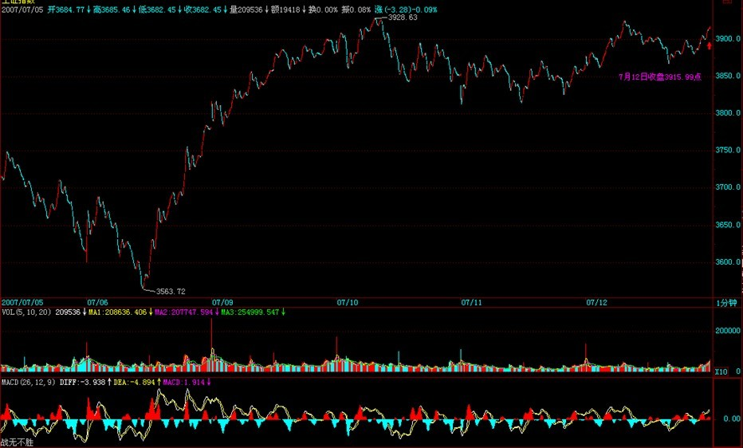
每日解盘(2007-07-13 15:36:38)
私募变乌龟，制造成交地量
(2007-07-13 15:36:38)
这两天，很多所谓的私募都开始自我检查，变缩头乌龟去了，乌龟多了，今天自然就地量了。在二级市场，本ID从来不和什么私募玩，也最反感那些所谓的私募，特别是其中最下等那些，简直就是偷摸拐骗、五毒俱全，对这些人不进行全面清理，就不会有中国资本市场健康发展的良好环境。
本ID的观点一向很明确，就是自己的钱自己干，真没这天分的，就把钱给特别好的公募基金，最好就是指数型基金，这样至少不会跑输指数。至于那些私募，最终的命运就是被收编或阳光化，还有，就是要加强对新投资者的基本知识教育，被这么低劣的骗术也能骗倒一片，简直给中国人丢脸。
大盘今天，在这么恶劣的环境下，还是对颈线进行了试盘，现在最大的问题，还是人气的聚拢，这需要反复的震荡才能完成，而对中国股票投资价值的再认识，是新一轮行情能否展开的理念基础，中期业绩的逐步公布，会让更多人认清中国股票的投资价值，当然，一些理论上的工作，还需要各方去努力。下周，由于有宏观数据的公布，让行情的发展存在变数，但这都不是核心的问题，关键是要有新理念，有新理念，才有新行情，一切不过是唯心所造，而这心，在投资市场中，就是理念。
个股方面，还是一直强调的那两类，中低价位的一类，都处在换庄或筹码收集的过程，所以短线不一定会有火暴表现，而沪深300，由于有长线资金一直关照，所以会有轮动表现，先让成分股轮动起来，然后延伸到大盘，一旦这个良性循环能形成，一切关于资金、人气的担心都无须担心了。路还很长，慢慢走吧。
终于又是周末了，终于可以腐败、419了，各位就各取所需去吧。
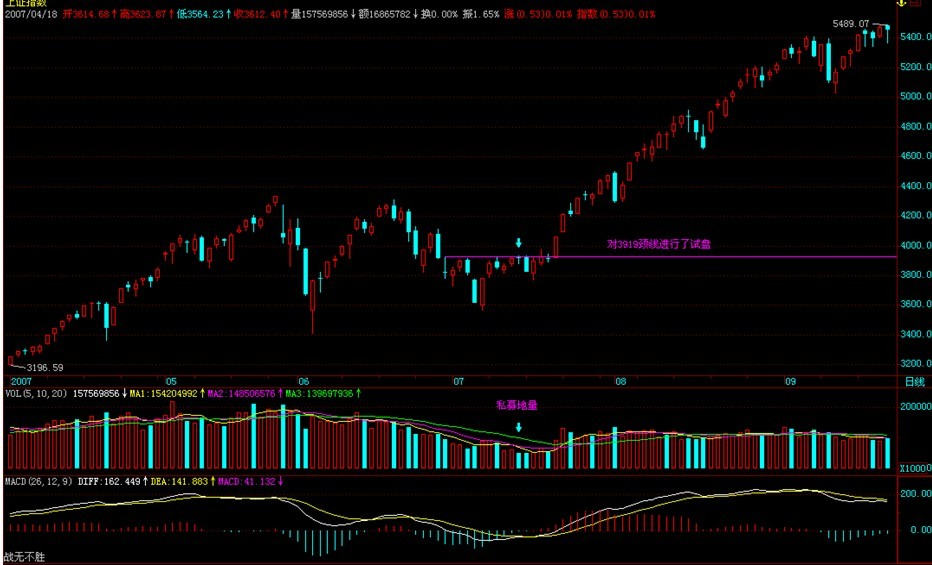
无论多空，都必须要退的一步
(2007-07-16
15:43:17)
上周五已经说了，由于本周有宏观数据的公布，让行情的发展存在变数，而周末所有的消息面，都对该数据有着最不利的版本，这时候，硬顶在颈线上，已经变得毫无意义，只能让有生力量被无谓地消耗。这些数据，从本质上说，只是为了让靴子落下，目前，地球人都知道的那几条利空，如果不落地，只能让行情的发展变得不可控制，无论多空，这一步都是必须要退的。
现在，确实是一个多空大对决的阶段，本ID已经很明确地说，从纯技术的角度，空头占着绝对优势，而从宏观面的角度，空头在短期上也占着绝对优势，这也就是为什么本ID一直强调路长着的原因。现在，就是要有不断的阻击战、阵地战、突击战，不断消耗空方的力量，通过在不同空间的震荡来让筹码与人气得到梳理。这是一个残酷而漫长的过程。
本周，借助宏观面数据的发布，空方的能量已经并继续会得到大力释放，而如何借力打力，用最小的消耗去消化这空方能力的宣泄，是短线摆在多方面前最重要的课题。而今天的走势，也正是该解决方案中必不可少的一步。
明天有可能到深圳出一次差，具体还没定好，如果走得太急来不及解盘，请原谅，有时间会补上的，对于散户的操作原则，本ID已经反复说过多次了，不用关心走势的合力是如何构成的，只要关系合力所画出的轨迹，看图操作，不要受任何的影响。而对于中短线操作的、技术又不好的投资者，在5周均线重新站稳之前，没必须参与市场的买入。而对于中长线的投资者，继续可以利用市场下跌的机会，震荡式对前面提到的两类股票进行中长线的建仓。
由于可能要出差，有几天帖子不能正常发，所以今天可以回答问题到4点半。
缠中说禅：
2007-07-16 15:52:41 [举报]
[匿名] 新浪网友 ==
会爆发经济危机么？好可怕,我们目前应当如何做以防止其影响呢?
2007-07-16 15:53:39 [举报]
[匿名] 新浪网友 2007-07-16 15:51:41 =
缠中说禅：
2007-07-16 15:57:31 [举报]
[匿名] 路人甲 2007-07-16 15:54:44
很早以前老大说过钢是去年的有色，但今年以来好像还是有色强很多啊，钢怎么样啊，有没有戏啊？我拿的是全市场市盈率几乎最低的宝钢，看日线这图形明明就是中枢底部啊，下跌的时候MACD更是只有很短的一点，明显底部盘整背驰啊，又有半年线支撑，怎么就是上不去呢？难道我判断错了？
==
你回想去年的有色是怎么走的，就明白今年的钢为什么这样走的。
缠中说禅：
2007-07-16 15:59:18 [举报]
[匿名] 新浪网友
缠中说禅：
2007-07-16 16:00:10 [举报]
爱笑的小鱼
缠中说禅：
2007-07-16 16:04:02 [举报]
[匿名] 人间几年 |
|
|
|